The schedule on this application displays any appointments for the date at the top. The 'Prev' and 'Next' buttons can be used to change the date. At the top of the page, clicking the 'Add Client' or 'Schedule Appointment' buttons will take you to different forms in the application. The search bar at the top can be used to search for an existing client.
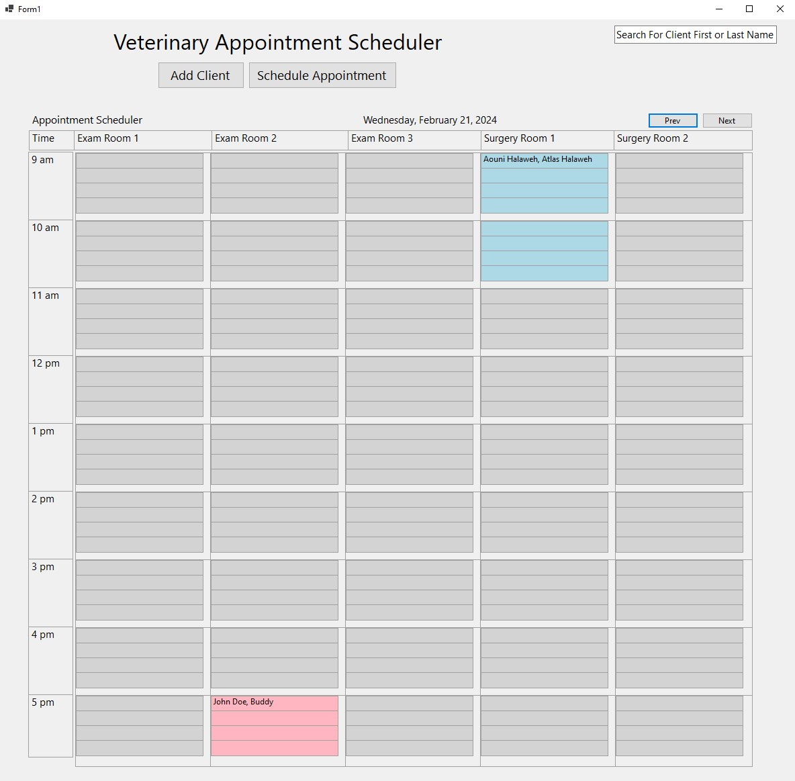To add a new client, click on the 'Add Client' button the schedule page. Enter in all of the information correctly in the text boxes to add the client to the system:
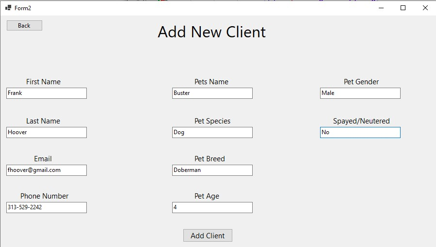Clicking the 'Add Client' button will add the client. If it was successful, a message will appear:
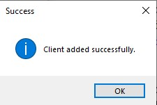If something is incorrect with any of the inputs, a message will appear to let you know:
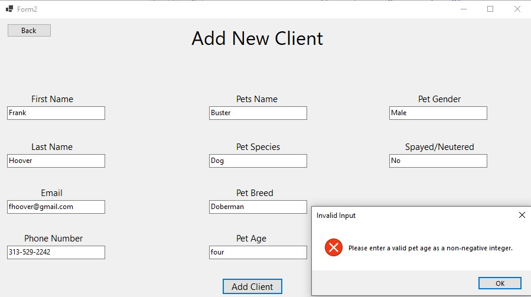You can schedule a new appointment for any customer that has been added to the system. To schedule an appointment, click on the 'Schedule Appointment' button and fill in all of the information correctly in the text boxes:
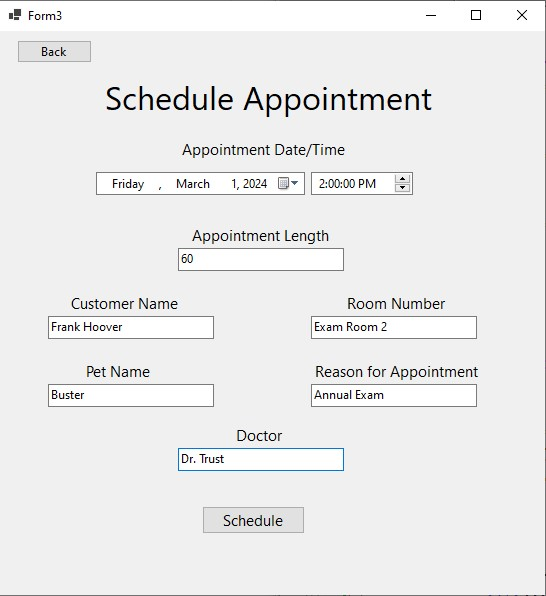Clicking the 'Schedule Appointment' button will schedule the appointment. If it was successful, a message will appear:
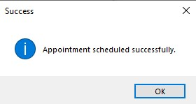If something is incorrect with any of the inputs, a message will appear to let you know:
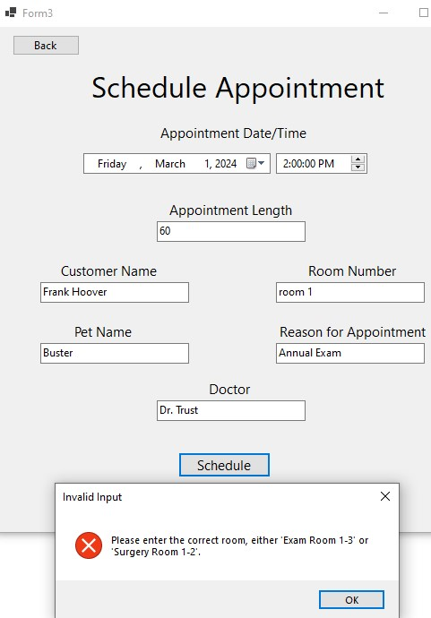The appointment will now appear on the schedule:
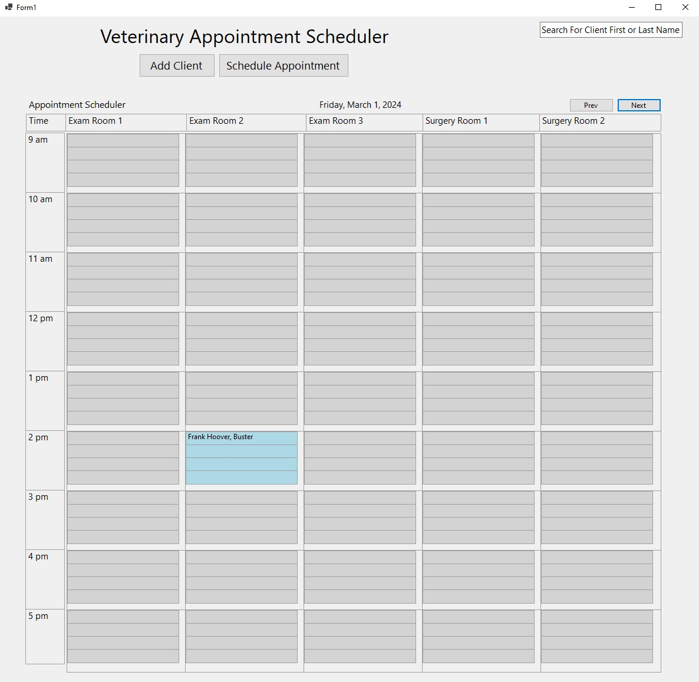To search for a client, we can enter in their first OR last name in the search bar:
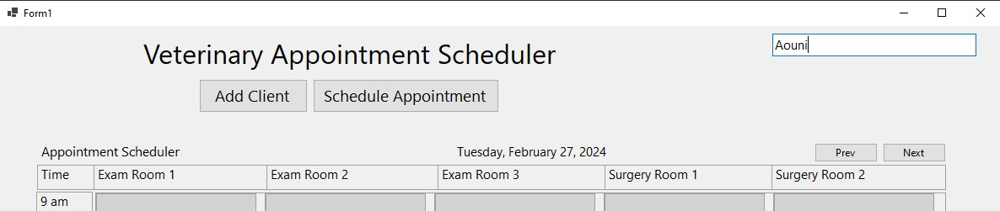Hitting 'Enter' on the keyboard will pull up a new page displaying the client and pet information:
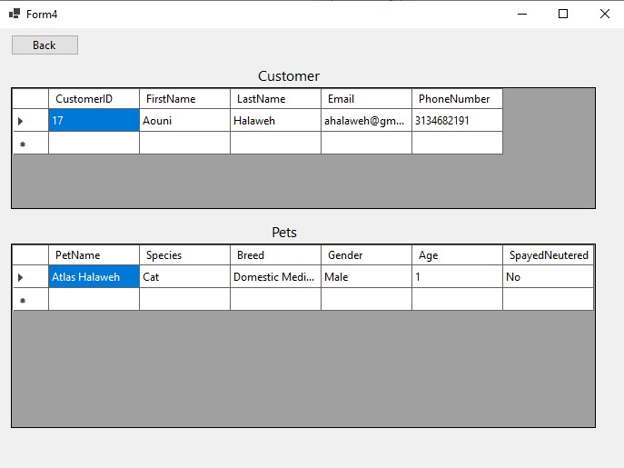All client, pet, and appointment information is stored within a database:
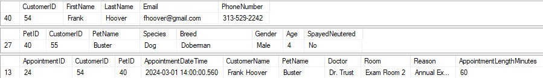